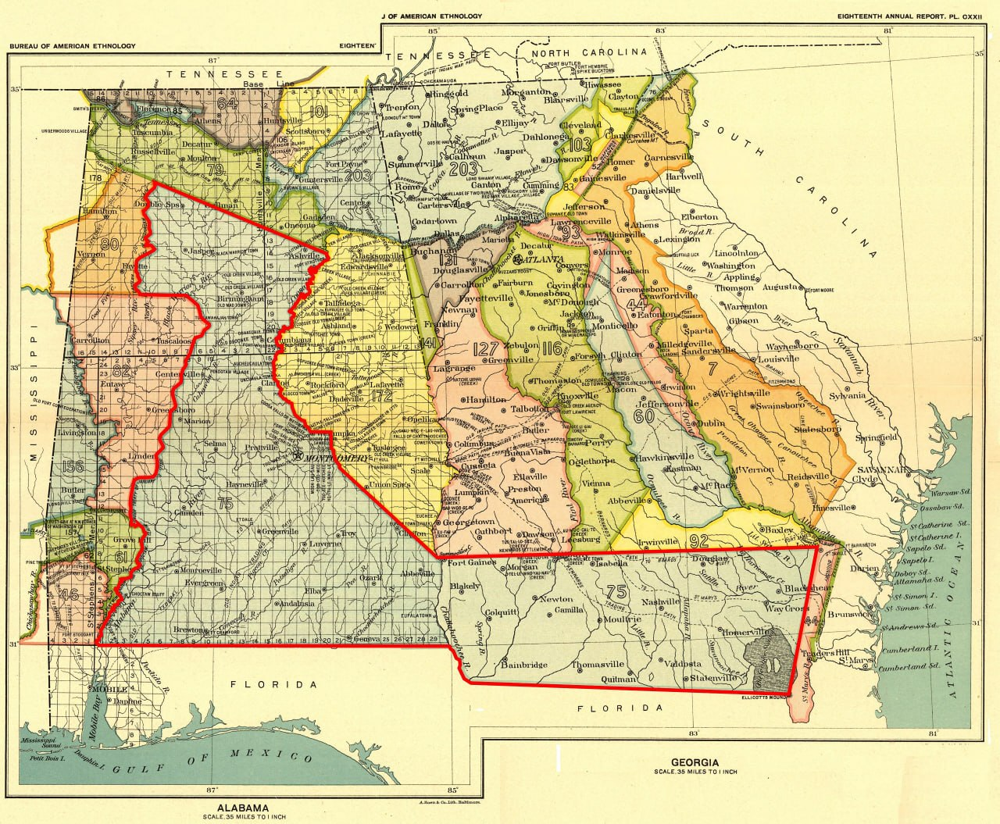
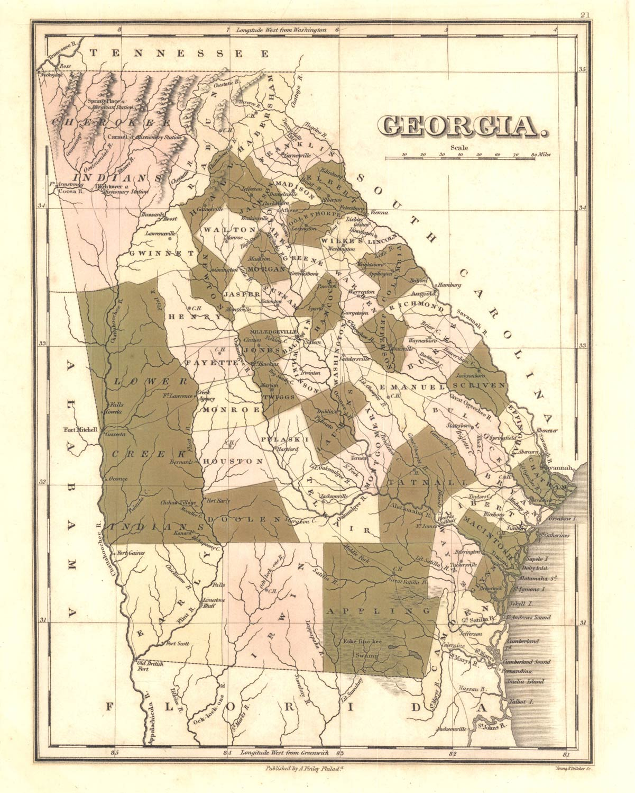

Early Settlers
Barney’s earliest history began more than eighty years before the town's founding. The Treaty of Fort Jackson, signed August 9, 1814, ended the Creek War and forced the Muscogee (Creek) Nation to cede about 23 million acres to the United States. Georgia organized part of the ceded territory into Early, Irwin, and Appling counties on December 15, 1818. Original Irwin County, covering approximately 5,000 square miles, was then surveyed into sixteen districts containing 6,582 lots—6,421 full lots of 490 acres each and 161 fractional lots—for the 1820 land lottery, which distributed the lots among eligible Georgians.

Source note: James Bagley Clements's History of Irwin County (1932), chapter 2, gives the sixteen-district survey total as 6,421 full 490-acre lots plus 161 fractional lots. The full lots alone equal 3,146,290 acres, or about 4,916 square miles; adding the fractional boundary lots supports the rounded estimate of approximately 5,000 square miles. The Georgia Archives overview of the 1820 Land Lottery independently confirms Irwin County's sixteen districts and 490-acre lot size. Library of Congress catalog record and digital copy.

The first settlement traditions
A familiar Lowndes County tradition says that four settlers—James Rountree, Lawrence Folsom, Drewry “Drew” Vickers, and Alfred Belote—moved with their families into the area in 1821. The surviving published trail begins with William Harden's 1913 history, the earliest account located and fully inspected that assembles this exact group. An unsigned article in the 1922 South Georgia Historical and Genealogical Quarterly repeated the four names and supplied the 1821 date. The article credited its data chiefly to recent Valdosta Times sketches by Hortense W. Baker, and the quartet passage appeared immediately afterward. Because that paragraph had no separate attribution, Baker is a plausible source but cannot be identified as the source of the exact list or wording. Her sketches have not been located. Harden's book and the 1922 article are therefore the earliest located links in the published chain through which the four-family tradition was preserved and repeated.
The earliest published accounts located do not agree on who should be called the area's first settlers. Hamilton W. Sharpe's 1884 recollections focused on the Hall settlement and Mount Zion and named a different circle of pioneers. Montgomery M. Folsom's inspected 1885–1886 writings described the Coffee Road, the Hall and Morven neighborhood, and several early residents, but did not assemble the familiar four-man group.
In December 1888, the Valdosta Times reprinted a Quitman Herald story naming “Mr. Frank Rountree and Lawrence Folsom” among the first settlers of “this portion of Georgia.” The story said their descendants remembered that coffee was unknown when the families first settled and was initially cooked like beans when someone later brought it for sale. It also recalled Native Americans visiting Mrs. Folsom “in droves.” Although she feared the visits, she treated her guests kindly and observed their custom of shaking hands on arrival and departure. The account goes on to describe barter for milk and a shared meal. The printed “Frank Rountree” was probably Francis Rountree, but the article does not establish his identity, and he should not be confused with James Rountree. The piece preserves a late family tradition rather than contemporary evidence of the settlement.
The January 1889 article “Correcting a Munchausen Story,” signed “Savage,” linked several settlement traditions in one account. It called James Rountree the first settler of Lowndes County and placed Joe and John Bryant at the old Indigenous town where Okapilco and Mule creeks meet. It also said that Lawrence Folsom married Rachel Vickers in Burke County about 1790, moved to the Ocmulgee River in 1808, lived there until 1823, and later traveled south and west after General Jackson's purchase opened Irwin County. The writer added that “the Folsoms and Rountrees had been used to Indian company many years before Brooks and Lowndes were settled.” The article does not date Folsom's arrival in Lowndes County, identify Rachel Vickers's relationship to Drew Vickers, mention Alfred Belote, or assemble the familiar four-man group.
An article signed “Civilized,” published on October 5, 1895, gave a more definite version. It said that settlement began in 1824 with Benjamin Daniels on the Withlacoochee River and Washington Joyce, Drew Vickers, Lawrence Folsom, and James Rountree on Little River. The writer called these “the first settlements made by white men in the present territory of Lowndes county.” The article also said Folsom's place occupied the site of an Indigenous town, where pottery, knives, arrowheads, tomahawks, and gun barrels had been found. This is the earliest located and inspected account that names Joyce, Vickers, Folsom, and Rountree together as the county's first white settlements. It does not mention Alfred Belote, and its 1824 date conflicts with the later four-family tradition's 1821 date.
J. R. Folsom added another version elsewhere in the same issue. Writing about Cecil and the Coffee Road, he said that the first lands settled were near the watercourses, dated settlement of “the Bryant place” on the Okapilco to 1829, and grouped James Rountree, Lawrence Folsom, and Drew Vickers as settlers east of Little River whose descendants still lived on those places. He did not call the three men the area's first settlers, give a date for their arrival, or include Alfred Belote.
R. E. L. Folsom offered another version in 1899. He called Washington Joyce's 1824 home and ferry the first white settlement in present Lowndes County, then said Vickers, Lawrence Folsom, and a man named Baker came next. He mentioned Rountree elsewhere in the article but did not include him in that sequence, and he did not name Belote. Differences in county boundaries explain part of the conflict, but the accounts also preserve genuinely different local traditions.
An unsigned 1900 article, “A Historical Sketch of Old Lowndes County,” expanded that sequence. It said Thomas Baker established a ferry on the Withlacoochee River where Coffee Road crossed it late in 1823, and that Thomas Futch bought the ferry in 1824. The article then placed James Rountree, Lawrence Folsom, and Drew Vickers on or near Coffee Road east of Little River in 1824. Thomas Baker is therefore a strong probable identification of the “man named Baker” in the 1899 account: the name, river, ferry, and road crossing agree. Because the two articles may preserve versions of the same tradition, the 1900 wording is not independent proof of Baker's identity or the dates.
Neither Harden nor the unsigned 1922 article cited a contemporary deed, diary, tax return, or court record for the four families' move. The account is a durable local tradition, not a proved passenger list with a certain date.
Original records do establish the men in the early county. On November 27, 1823, Newman Pounds conveyed Lawrence Folsom all 490 acres of District 12, Land Lot 187. The deed identifies Lawrence as "of the County of Irwin," proving that he was an Irwin County resident and landowner by that date. It does not establish when his family moved there. Rountree can be followed from Pulaski County into the Lowndes settlement and died after an 1834 attack on the Tallahassee road. Folsom later became a Lowndes county-site commissioner and a Mount Zion trustee. Vickers appears in the 1820 Montgomery County lottery and later Lowndes census, land, court, and tax records. Belote held Land Lot 55 in District 12 and was dead by 1844. Their dossiers also show how much remains unknown, including exact arrival dates, complete families, and the location of every first home.
The old claim that one man was the area's first settler is even less certain. A January 1889 newspaper item said that “Joe and John Bryant” settled at the old Indigenous town where Okapilco and Mule creeks meet. It separately called James Rountree Lowndes County's first settler. R. E. L. Folsom wrote in 1899 that Jose Bryant settled at the old town in 1828. An unsigned 1900 article changed the year to 1823 and added claims about Jose's household, enslaved labor, and first crop. Huxford later substituted John Bryan and Abraham Hunter. John Bryan is documented in Lowndes County, and his daughter Jane Hunter's 1912 obituary associated him with Okapilco. No record yet proves that Jose, Joe, and John were one person. The identity remains unresolved.
The county-organization story now appears on From Irwin to Lowndes and Brooks Counties. The church, campground, trustees, and militia connections are covered on Mount Zion.
What the independent record check established
An October 2026 review tested eighty additional names from the wider early-settler roster against census images, official registers, local records, church evidence, and known identity conflicts. It did not turn the roster into a list of eighty proved settlers. Instead, it separated a small number of direct record findings from the much larger body of retrospective or unresolved claims.
The clearest shared record is a digitized 1836 Lowndes County general-militia return. It names Pennywell Folsom, Thomas Folsom, Ashley Lawson, James J. Joyce, John Hall, John Dampier, David Edmondson, Zachariah Fletcher, Henry Rowell, Samuel T. Henderson, and Cornelius English as privates. It names Abraham Byrd in the same return, William G. Hall as captain of the 660th District, and Joel Gornto as second lieutenant of the 659th District. The return supports each man's district association and eligibility for the general militia in 1836. It is not an active-service muster and does not prove Creek War service.[25]
Federal official registers also name Hamilton W. Sharp or Sharpe as postmaster at Sharpe's Store in 1829 and 1833. Those entries establish the office and locality by 1829, but they do not prove the exact April 2, 1828 opening date reported in later postal histories.[26]
At that stage, the review left most claims unchanged. No named household from the wider roster had been independently verified from a newly inspected 1830, 1840, or 1850 schedule image. Reel and index references were treated as finding aids, not household evidence. The records still require several people to remain separate: the older and younger Ezekiel Selphs; the two Archibald Stricklands in the indexed 1850 household; the 1850 Asahel Renfroe, who was too young to be an adult migrant in 1826; an unrelated William Newton passenger; and younger Simpson Stricklands who cannot be the man already holding office in 1829. Other same-name questions remain unresolved.
The result is a research control, not a new claim that every traditional arrival date is proved. Dates taken from Huxford or another retrospective compilation remain attributed traditions unless a contemporary record independently supports them.
Farms, property, and enslaved labor
Farming, livestock, mills, stores, ferries, and trade supported the neighborhood, as did enslaved labor. Census and estate records count enslaved people in households associated with Alfred Belote, Drew Vickers, Sion and Enoch Hall, Francis Rountree, Hamilton Sharpe, William and Henry Blair, John Pike, James J. Joyce, William Smith, Rev. Joshua Platt, and others. Most federal schedules omit their names. Changing counts cannot be treated as a continuous list of the same people, and matching ages alone do not establish identities across emancipation.
William Folsom, a son of Lawrence Folsom, remained in the area as county lines changed; later accounts connect him with courthouse commissions and Mount Zion. His obituary says he died at his Brooks County home on November 16, 1872, in his seventy-eighth year. Four original administrator's deeds prove that his estate included at least 2,080 acres: all of District 9 Land Lots 492, 519, and 521; 120 acres in the southeast corner of Lot 491; and all of District 12 Lot 323. The estate sold those tracts to Nancy Perry, Charles W. Ryall, and West Rountree. The $30,000 administration bond was security for the administrators, not an estate valuation.
Elizabeth Folsom's executor separately conveyed her District 9 Land Lots 493 and 520 to her daughter Edith Rountree for $1,200. Elizabeth's will identifies Edith as her daughter and Charles W. Ryall as her grandson. Together, the will and deeds document a Folsom-Ryall-Rountree-Perry land and family network north of Barney. They do not reveal how William and Elizabeth acquired every tract or establish William's complete acreage.
A surviving photograph shows William and Elizabeth Folsom's broken marble grave marker, with both names and the years 1872 and 1877 visible. Field documentation places the marked graves on their homeplace in District 9, Land Lot 520, contrary to the online description of unmarked graves in the family cemetery. In 1870, Dicy Roberts and her sons Louis and John, all Black, lived in William Folsom's household; they remained in Brooks County in 1880. No record found shows whether any member of the Roberts family had been enslaved by Folsom.
Acts of incendiarism, 1885–1887
A series of suspected incendiary fires struck the Morven district during the two years before Barney was founded. Gum Pond School House burned around November 1885. When another schoolhouse on the same ground burned on November 21, 1886, the newspaper called it suspected incendiarism and noted the earlier fire.
The best-documented cluster began in January 1886. During the same night that Folsom Bridge burned, fire destroyed William Ryals's gin house, a country schoolhouse, and the miller's dwelling at Dr. Bourquin's mill. Kerosene had reportedly been poured on Bourquin's mill, but the doctor discovered the attempt and drove the suspected incendiaries away. The account places Ryals and a Dr. Bourquin in the broader Little River neighborhood, but gives no initials or land descriptions that would fix either residence or the mill site.
A February reprint said that, while residents were preparing to repair the bridge, someone burned its remaining portion and “another country school-house.” The report said there was no clue to the perpetrators. Its description of the crossing as being at “the Rocks” on the Withlacoochee conflicts with the more specific contemporary report identifying the January crossing as Folsom Bridge on Little River, so that geographic wording must be treated cautiously.
The burning continued into 1887. After Stonewall Academy burned in June, a newspaper summary said that four schoolhouses, “white and black,” had burned in the Morven district during the preceding two years. It also reported that three churches, a mill, and other property had been destroyed by incendiaries. The summary did not identify every building or name a suspect.
A fuller account places Stonewall Academy about nine miles northeast of Quitman. After it burned on a Sunday night, neighbors converted an outbuilding on Mr. Sepell's plantation into a temporary schoolhouse. That building burned after about a week of use. A third school opened in a house on Mr. Rountree's place. Near two o'clock one morning, Rountree's tenant reportedly found Hope Croft near it with partly burned lightwood splinters. The article said Hope confessed to burning Stonewall Academy and the temporary schoolhouse and intended to burn the third because he did not want to attend Rev. Joseph J. Williams's school. It described him as “not over ten”; other reports gave his age as eight years and five months.
Hope was a son of Jacob Henry “Jack” Croft, who held about 325 acres on the north side of Land Lot 227 in the Morven district before selling the tract to McNeil & Rozier in 1890. Foster had not yet developed there during Croft's residence. After Hope's reported confession, the Quitman Free Press said local residents adopted a resolution requiring Croft and his family to leave within three days and remain at least twenty-five or thirty miles away. The paper said Croft agreed. This was a community action, not a court judgment against him.
Hope would have been nearly seven when the January 1886 fires occurred. His repeated schoolhouse burning, his age, and the family's land in the same general neighborhood make a connection with the 1885–1886 fires possible.
No located source names Hope as a suspect in the Gum Pond fires or the January and February 1886 fires. The detailed confession concerns Stonewall Academy and its temporary replacement in June 1887, and no article connects him with Folsom Bridge, William Ryals, Dr. Bourquin, or the earlier burned schoolhouses. The theory remains unproved.
Read the supporting evidence and unresolved questions in the Early History Profiles.
Principal sources
- James Bagley Clements, History of Irwin County (1932), chapter 2, for the original sixteen-district survey totals: 6,421 full 490-acre lots and 161 fractional lots. Those figures support the rounded estimate of approximately 5,000 square miles.
- The 24 evidence-graded dossiers in the Early History Profiles, with original records, numbered citations, conflicts, and reproducible search notes.
- Unsigned, “A Sketch of the Early History of Lowndes County, Georgia,” The South Georgia Historical and Genealogical Quarterly (1922), pp. 1–7, edited by Folks Huxford. Original Internet Archive scan; AHGP transcription. Used for the 1821 quartet tradition and the article's express acknowledgment of Hortense W. Baker's Valdosta Times sketches.
- Folks Huxford, The History of Brooks County, Georgia, 1858-1948 and History of Lowndes County, Georgia, 1825-1941.
- William Harden, A History of Savannah and South Georgia, 1913.
- “A Tough One,” reprinted from the Quitman Herald, The Valdosta Times, December 29, 1888, p. 2. Newspapers.com image 889787881. Used for its account naming Frank Rountree and Lawrence Folsom among the first settlers and for the Folsom family anecdotes.
- “Correcting a Munchausen Story,” signed “Savage,” The Valdosta Times, January 12, 1889, p. 5. Newspapers.com image 889788173. Used for its accounts of James Rountree, Lawrence Folsom, and Joe and John Bryant.
- Article signed “Civilized,” The Valdosta Times, October 5, 1895, p. 3. Newspapers.com image 889834253. Used for its 1824 account naming Benjamin Daniels on the Withlacoochee and Washington Joyce, Drew Vickers, Lawrence Folsom, and James Rountree on Little River as the first white settlements in present-day Lowndes County.
- J. R. Folsom, “Cecil, Georgia: A Land of Peace and Plenty,” The Valdosta Times, October 5, 1895, p. 8. Newspapers.com image 889834283. Used for the Coffee Road account grouping James Rountree, Lawrence Folsom, and Drew Vickers east of Little River and dating settlement of “the Bryant place” on the Okapilco to 1829.
- R. E. L. Folsom, “Historic Sketch of Lowndes County,” The Valdosta Times, October 14, 1899, p. 22.
- Unsigned, “A Historical Sketch of Old Lowndes County,” The Valdosta Times, October 23, 1900, p. 17. Newspapers.com image 889665101. Used for its identification of Thomas Baker at the Withlacoochee–Coffee Road ferry and its 1824 placement of James Rountree, Lawrence Folsom, and Drew Vickers east of Little River.
- Hamilton W. Sharpe, early-history articles in the Valdosta Times, 1884, and William Smith's 1880 first-court recollection.
- National Park Service, “Summer 1814: The Treaty of Ft. Jackson ends the Creek War”.
- Georgia Archives, “1820 Land Lottery”, official land-lot GIS, and the 1867 and 1908 Brooks County maps.
- Digital Library of Georgia, Anthony Finley's 1822 Georgia map.
- Wiregrass Region Digital History Project, early Irwin County land-lot map.
- “An Outbreak of Incendiarism at the Rocks,” Savannah Morning News, January 21, 1886, p. 2, Georgia Historic Newspapers; Valdosta Times, February 6, 1886, p. 1, Newspapers.com image 889717651. The later report explicitly identifies the burned crossing as Folsom Bridge.
- “Mischief in Lowndes,” Columbus Daily Enquirer-Sun, February 17, 1886, p. 2, Georgia Historic Newspapers. Used for the reported burning of the bridge's remaining portion and another country schoolhouse; its conflicting river and place description is not treated as controlling geography.
- “Incendiary Fire,” Savannah Morning News, November 22, 1886, p. 6, Georgia Historic Newspapers; reprinted in the Georgia Home Journal, November 26, 1886, p. 1, Georgia Historic Newspapers. Used for the two fires at the Gum Pond schoolhouse site.
- “More Incendiarism,” Morning News, June 21, 1887, p. 6, Georgia Historic Newspapers. Used for the contemporary summary of four schoolhouses, three churches, a mill, and other property burned in the Morven district.
- “A Precocious Kid,” Columbus Enquirer-Sun, July 2, 1887, p. 5, Georgia Historic Newspapers. Used for Stonewall Academy, the temporary schools, Hope Croft's name, and the reported confession.
- “School Houses Burned,” Savannah Morning News, July 5, 1887, p. 5, Newspapers.com image 852602296; Quitman Free Press resolution concerning “Mr. Jack Croft and his family,” reprinted in the Valdosta Times, July 9, 1887, p. 2, Newspapers.com image 889721379. Used for the boy's reported age and the community's order that the Croft family leave the area.
- Brooks County deed, J. H. Croft to McNiel & Rosier, October 9, 1890, conveying about 325 acres on the north side of Land Lot 227, FamilySearch image. The deed establishes Croft's land connection but does not connect his son to the 1886 fires.
- [25] Lowndes County, Georgia, 81st Regiment general-militia return, 1836, Valdosta State University Archives and Special Collections, item 10428/1219. The repository identifies it as a general-militia return rather than an active-service roster.
- [26] Register of Officers and Agents, Civil, Military, and Naval, in the Service of the United States, September 30, 1829 and September 30, 1833, entries for Hamilton W. Sharp/Sharpe at Sharpe's Store.